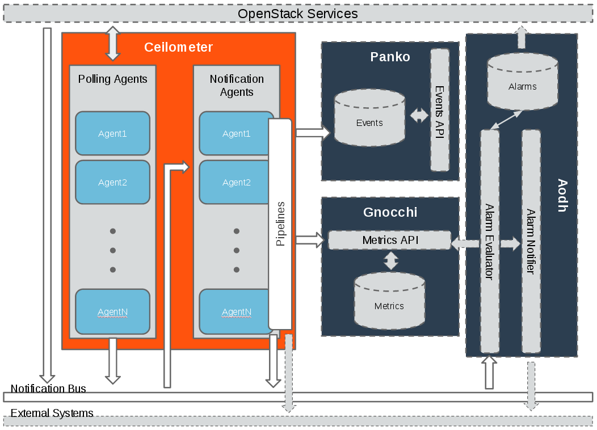
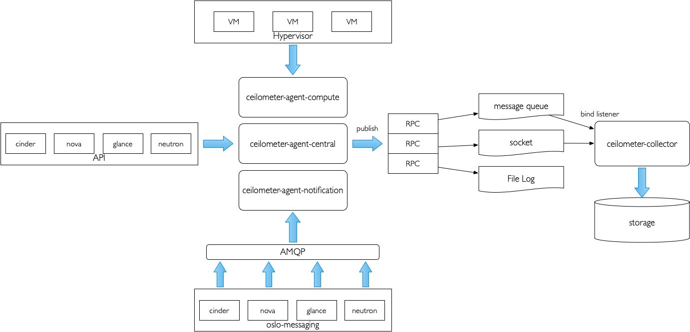

目录
架构
Ceilometer项目于2012年启动，其中包含一个简单的目标：提供基础架构以收集有关OpenStack项目所需的任何信息。

Ceilometer提供两种核心服务。
- polling agent（轮询），轮询OpenStack服务并构建Meters的守护程序。
- notification agent（通知），监听消息队列上的通知，并将它们转换为Events（事件）、Samples（样本），并应用管道（pipeline）操作。
数据
| 功能名称 | 功能描述 | 提供功能Ceilometer模块 |
|---|---|---|
| Collect | Meters数据收集 | ceilometer-agent-compute ceilometer-agent-central ceilometer-agent-notification ceilometer-collector |
| Transform | Meters数据转换 | |
| Pulish | Meters数据发布 | |
| Store | Meters数据存储 | |
| Read | Meters数据访问 | ceilometer-api |
| Alarm | 告警 | ceilometer-alarm-notifier ceilometer-alarm-evaluator |
数据收集
Ceilometer有两种方法来收集数据。
- Polling agent轮询某些API或其他工具以定期收集信息。
- ceilometer-agent-compute，运行在每个compute节点上，以轮询的方式收集虚拟机的CPU内存IO等信息。
- ceilometer-agent-central，运行在controller节点上，通过各个组件的API收集监控数据。
- Notification（ceilometer-notification）接收消息队列总线上生成的消息并将它们转换成Ceilometer的Events（事件）或Samples（样本）。


数据处理
Meters数据的处理使用Pipeline的方式。Meters数据依次经过0个或多个Transformer和0个或多个Publisher处理，最后到达一个或多个Receiver。其中Receiver包括Ceilometer Collector和外部系统。